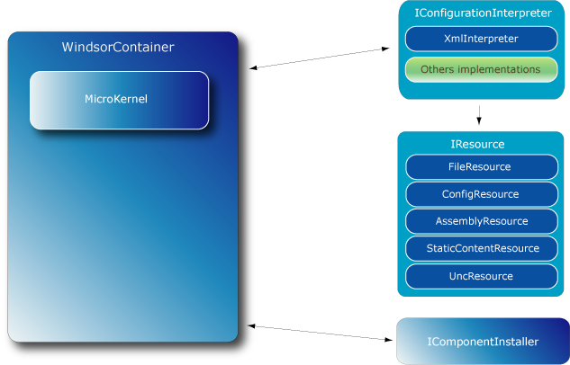

Table of contents
Using the Windsor Container
The Windsor Container usage is not different from the the MicroKernel usage. In fact you can even access the MicroKernel instance aggregated by the Windsor Container using the Kernel property.
If you have chosen Windsor Container it is likely that you are interested in using external configuration. So it is a good thing to know the interfaces and classes related.

Configuration Interpreter
A configuration interpreter implements the interface IConfigurationInterpreter and is reponsible for translating the configuration from what is being read to what the MicroKernel expects.
The MicroKernel does not know XML or any other format. Configuration nodes are exposed with an IConfiguration and added to IConfigurationStore. So the interpreter needs to read the configuration and create IConfiguration instances and register them into the IConfigurationStore implementation exposed by the MicroKernel.
XmlInterpreter
At the moment Windsor Container is shipped with only one interpreter implementation: XmlInterpreter. As the name implies it is able to translate Xml configuration.
IResource
The Configuration intepreter needs to read the configuration from somewhere. The source of the data is abstracted using the IResource interface. A handful of implementations are exposed: FileResource, which reads from files; ConfigResource, which uses the configuration associated with the AppDomain (for example, App.config); AssemblyResource, which reads from resources compiled into an assembly; UncResource, which reads from a network path and finally StaticResource that has the static content itself.
Component Installer
The WindsorContainer, once the configuration is read, check the nodes registering the components and facilities that supplied enough information.
The registration is done as if you have invoked AddFacility and AddComponent methods on the MicroKernel.
Generated by Castle Anakia.
Sponsored by  Castle Stronghold.
Castle Stronghold.